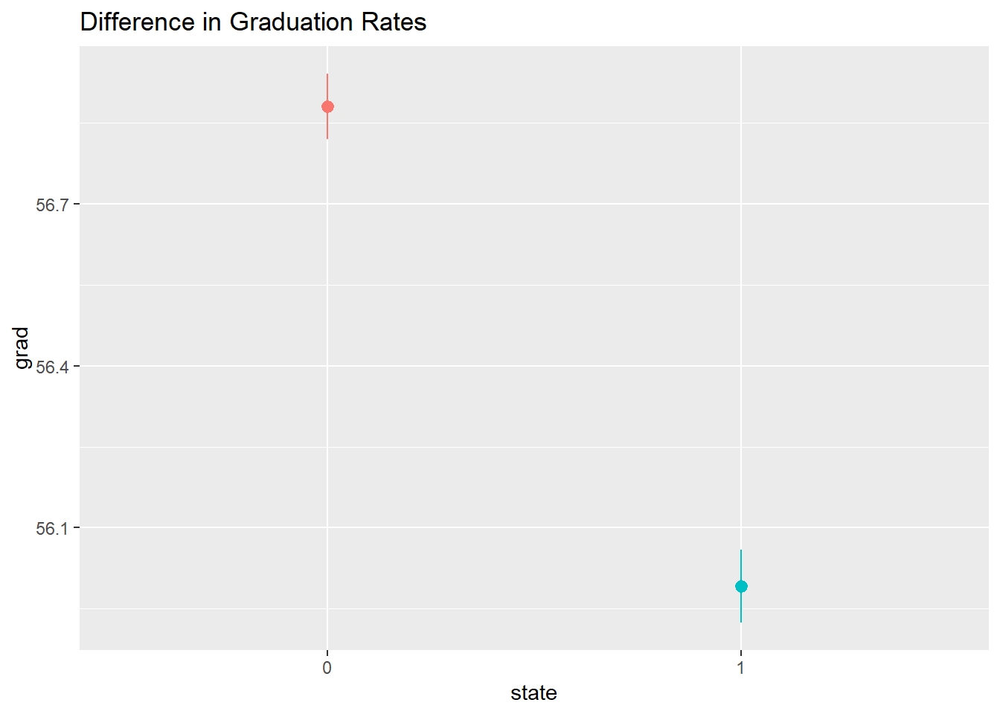
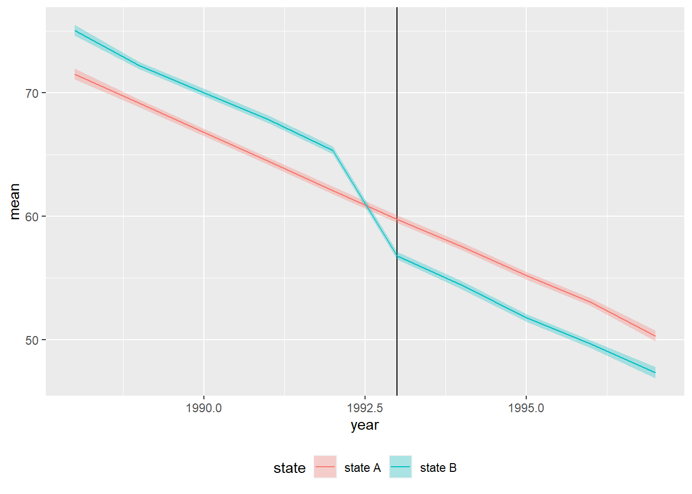

Synthetic Differences in Differences
Generate a synthetic (fake) dataset in R with all the variables you’ll need for the real life analysis. Analyze the data using your identification strategy. For instance:
Include robustness checks to ensure the validity of your effect (i.e. if you’re doing regression discontinuity, test different bandwidths and kernel types; etc.)
(As many words as you need to fully describe your analysis and results)
#packages
library(tidyverse)
library(broom)
library(patchwork)
library(scales)set.seed(4660)
# simulate 100000 students
n_students <- 100000
# state B represents Georgia (treatment state) while state B represents control state
did_data <- tibble(
id = 1:n_students,
year = round(runif(n_students, min = 1988, max = 1997), 0),
state = sample(c("state A", "state B"), n_students, replace = TRUE)
) %>%
mutate(hope = ifelse(state == "state B" & year > 1992, TRUE, FALSE)) %>%
mutate(grad_base = rbeta(n_students, shape1 = 6, shape2 = 3) * 100,
state_effect = ifelse(state == "state B", rnorm(n_students, mean = 4, sd = 2), 0),
year_smaller = year - 1987,
year_effect = rnorm(n_students, mean = -3, sd = 0.2) * year_smaller,
hope_effect = ifelse(state == "state B" & year > 1992,
rnorm(n_students, mean = -8, sd = 2),
0),
grad = grad_base + state_effect + year_effect + hope_effect,
grad = rescale(grad, to = c(0, 100))) %>%
mutate(after = year > 1992)
head(did_data)## # A tibble: 6 × 11
## id year state hope grad_base state_effect year_smaller year_effect hope_effect grad after
## <int> <dbl> <chr> <lgl> <dbl> <dbl> <dbl> <dbl> <dbl> <dbl> <lgl>
## 1 1 1995 state B TRUE 67.1 5.49 8 -27.3 -6.69 51.9 TRUE
## 2 2 1990 state A FALSE 79.0 0 3 -9.60 0 76.0 FALSE
## 3 3 1994 state A FALSE 51.3 0 7 -21.2 0 45.2 TRUE
## 4 4 1990 state A FALSE 74.8 0 3 -8.76 0 73.4 FALSE
## 5 5 1995 state B TRUE 75.1 2.88 8 -20.7 -6.36 61.6 TRUE
## 6 6 1994 state B TRUE 73.1 7.03 7 -20.1 -7.04 63.2 TRUEggplot(did_data, aes(x = state, y = grad, color = state)) +
stat_summary(geom = "pointrange", fun.data = "mean_se") +
guides(color = "none")
plot_data <- did_data %>%
group_by(year, state) %>%
summarize(mean = mean(grad),
se = sd(grad) / sqrt(n()),
upper = mean + (1.96 * se),
lower = mean + (-1.96 * se))## `summarise()` has grouped output by 'year'. You can override using the `.groups` argument.ggplot(plot_data, aes(x = year, y = mean, color = state)) +
geom_vline(xintercept = 1993) +
geom_ribbon(aes(ymin = lower, ymax = upper, fill = state), alpha = 0.3, color = FALSE) +
geom_line() +
theme(legend.position = "bottom")
model_did <- lm(grad ~ after + state + hope , data = did_data)
tidy(model_did)## # A tibble: 4 × 5
## term estimate std.error statistic p.value
## <chr> <dbl> <dbl> <dbl> <dbl>
## 1 (Intercept) 66.3 0.0775 855. 0
## 2 afterTRUE -10.6 0.109 -96.9 0
## 3 statestate B 3.27 0.109 29.9 3.64e-196
## 4 hopeTRUE -6.43 0.154 -41.6 0modelsummary(list("DiD" = model_did),
stars = TRUE,
title = " Synthetic Regression Results")| DiD | |
|---|---|
| (Intercept) | 66.281*** |
| (0.078) | |
| afterTRUE | −10.589*** |
| (0.109) | |
| statestate B | 3.272*** |
| (0.109) | |
| hopeTRUE | −6.425*** |
| (0.154) | |
| Num.Obs. | 100000 |
| R2 | 0.252 |
| R2 Adj. | 0.252 |
| AIC | 784154.0 |
| BIC | 784201.5 |
| Log.Lik. | −392071.986 |
| F | 11245.100 |
| RMSE | 12.20 |
| + p < 0.1, * p < 0.05, ** p < 0.01, *** p < 0.001 |